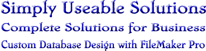

- software -
|  |
If during the first 30 days you are dissatisfied for any reason, we will gladly refund the purchase price. . We have taken great care to offer the best software solutions for your organization's human resource management and training needs. Please take some time to review our on-line catalog. If you have any questions about our software or would like to make a suggestion, please give us a call at 1-800-444-7139. |
 |
Please do not take legal action on the basis of what you read here without consulting your own attorney. . Pels about getting your money's worth when you buy computer software. We wrote it to help you get a refund, support, or compensation for significant losses caused by defective software. Bad Software will help you explore your legal rights. |
those are the truly interesting things that are worth pursuing. . i was at transmediale, and me and my LAN-friends actually got half the software award (the other half went to Alex MacLean) as well as two public awards (given by the visitors of transmediale) as well as an honorary mention in the interaction category for tracenoizer. matthew fuller for instance talked about how software designers design interfaces and how these then shape users. margarethe on the other hand talked more about the generative qualities of software.
|
those are the truly interesting things that are worth pursuing. . i was at transmediale, and me and my LAN-friends actually got half the software award (the other half went to Alex MacLean) as well as two public awards (given by the visitors of transmediale) as well as an honorary mention in the interaction category for tracenoizer. matthew fuller for instance talked about how software designers design interfaces and how these then shape users. margarethe on the other hand talked more about the generative qualities of software. |
another software site: http://www.cg-software.com